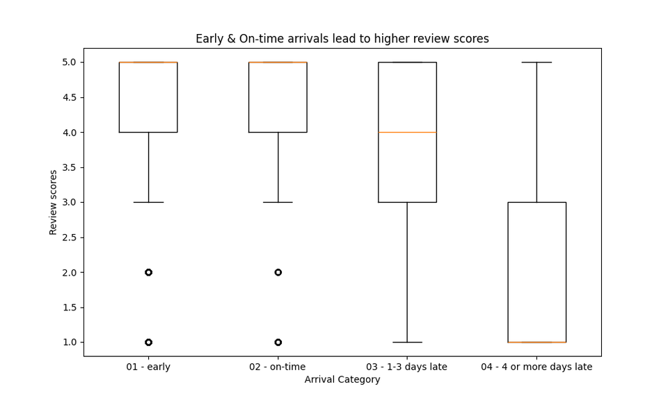
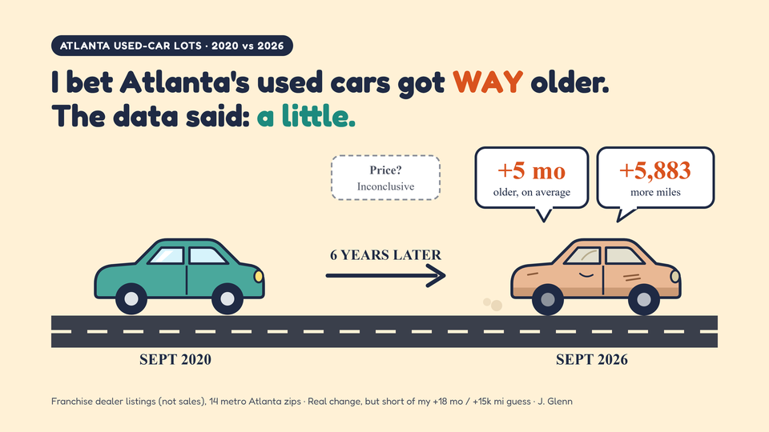
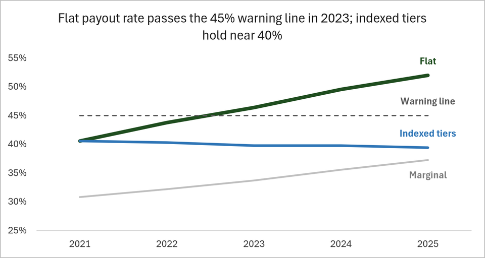

Data Analyst · Operations & BI · Atlanta, GA
I keep going until I find
the story behind the numbers.
678-793-8993 · j.glenn2nd@gmail.com
I grew a company territory I managed to $500K+ in annual revenue, starting from zero, by doing what most people call analytics without the title: tracking KPIs daily, finding execution gaps before they escalated, and translating raw field data into leadership decisions in real time. I did that for 12 years. Now I do it with a full stack.
What separates me is not the tools. It is the instinct. I ask the question behind the question, because most people do not ask for what they are actually searching for. That is how I found the tipping point where late delivery breaks a customer: four days past the promised date, where average review scores fall from 4.30 to 1.93. I do not stop at what the data says. I keep testing until I can say what it supports and what it does not.
I am a Google Advanced Data Analytics Professional and a bridge-builder. When I commit to a problem, that becomes the only thing. I take accountability early, close the loop completely, and deliver something the person across the table can act on, not just read.
Retail · Automotive · Telecom · Healthcare · Marketing · Operations · Public Safety · Customer Analytics · Sales Compensation. Every project starts with a business question and states what the data can and cannot support.

Public data Olist E-Commerce Fulfillment Analysis 96,470 orders · platform OTR 92.08% · late arrivals avg 1.93 stars Kruskal-Wallis and Mann-Whitney U testing across 96,470 delivered orders confirmed delivery timing is strongly associated with review scores (p<.001) against a 92.08% platform OTR. A follow-up scikit-learn classifier tested whether that risk was predictable pre-order: it wasn't, a documented negative finding rather than a failed one.
Collected data Metro Atlanta Used-Car Inventory Study 11,671 dealer listings · 3 pre-specified tests · none cleared Did franchise-dealer used inventory get older, higher-mileage, and pricier from September 2020 to September 2026? Two sources matched across 14 weighted zips, with thresholds set before the data was seen and a dealer-level cluster bootstrap behind every interval. Age and mileage rose, but not enough to clear the bar. Price could not be confirmed.
Synthetic data Territory Quota & Commission Model 1,200 rep-months · $5.5M excess payout vs. benchmark · 27% of commissions paid Synthetic case study. Does a flat-tier commission structure pay out more than it should? An Excel model of 4 regions and 1,200 simulated rep-months says it does: the payout rate rose from 40.6% to 52.0% of margin and passed the 45% warning line in 2023. Three plans compared. Indexing the tier edges to growth holds the rate near 40% and shows modeled savings of about $3.1M, before behavioral effects. Every total is tied out on a Checks tab.Looking for an analyst who brings field operations judgment to your data? Let's talk.